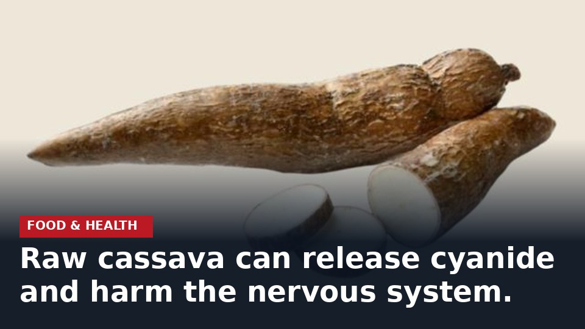
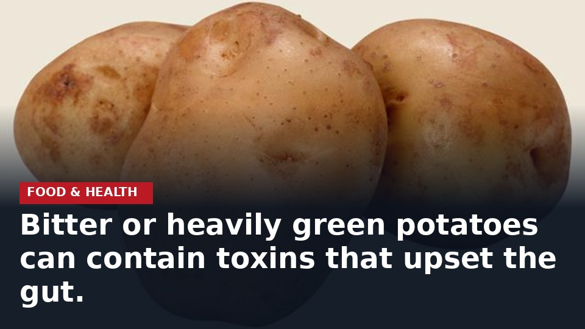
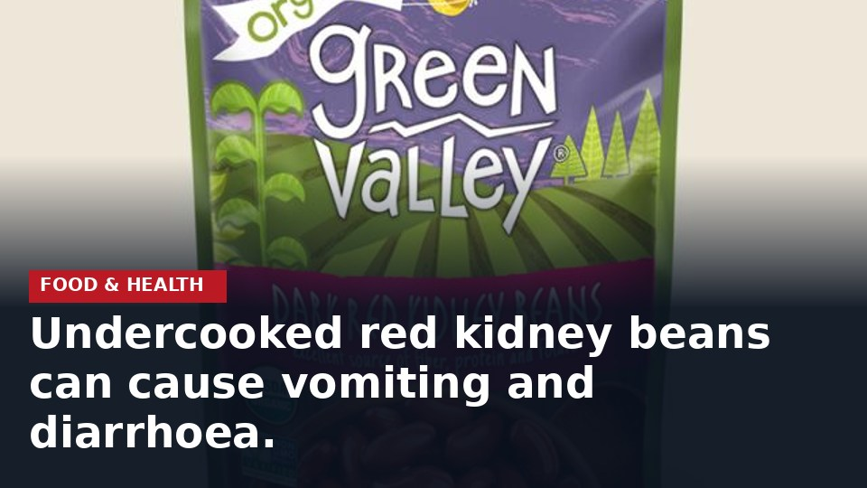

FOOD & HEALTH / NERVOUS SYSTEM
Why shouldn’t you eat raw cassava?
Proper processing matters before cassava becomes food.

Cassava contains compounds that can release cyanide. Inadequately processed cassava can cause acute poisoning. Repeated high exposure with poor nutrition has also been linked to konzo, a disorder affecting movement.
Related post

What if a potato is green and tastes bitter?Green colour can be a clue that unwanted compounds are present.A friend may describe a variety as sweet rather than bitter, but tasting a raw piece is not a sound way to decide that it is safe. Nor is peeling alone a dependable substitute for proper processing. If you do not know the variety or the appropriate local food safety method, do not improvise a quick preparation for the family.
Read the health guidance · www.who.int ↗
Read next

Why can undercooked red kidney beans make you sick?The name is misleading: the immediate problem is usually in the gut.